id="js_content" style="">
正文共计2000字左右
预计阅读时间6min
转载请在后台回复“授权”
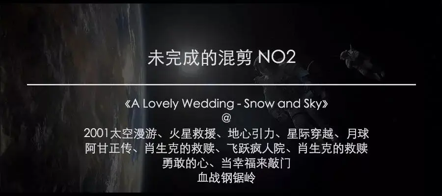
1986年1月28日，美国挑战者号准备升空。
这一航天壮举受到万众瞩目，距离发射现场6.4m的看台上挤着上千人。
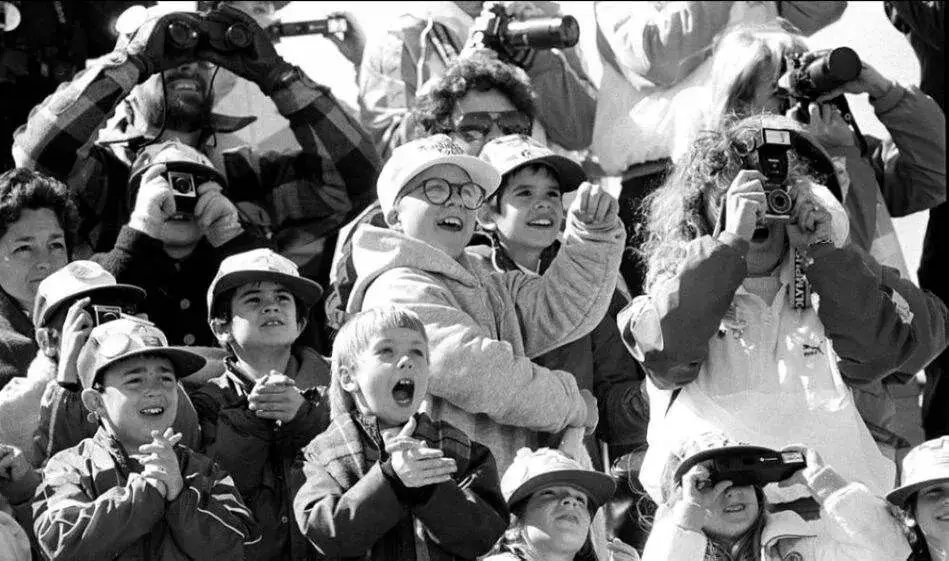
很快，挑战者号在大家的期待中顺利起飞。
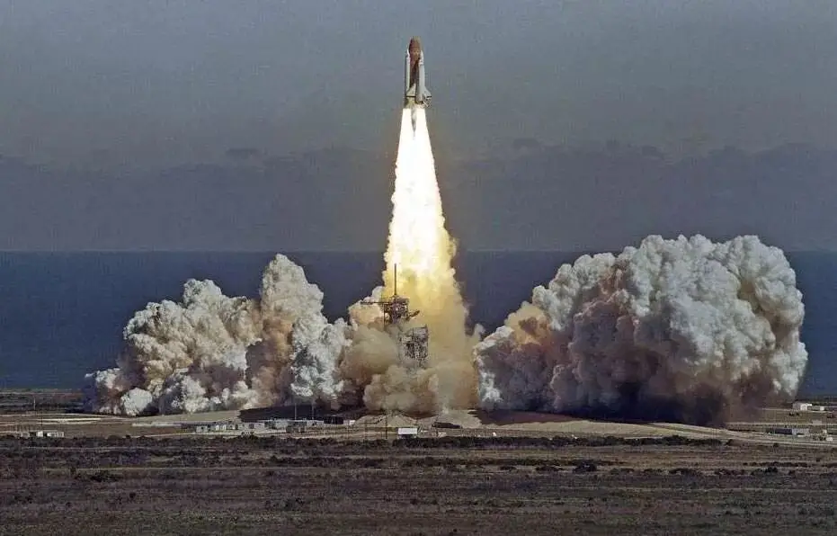
可升空73秒后，挑战者号便发生爆炸，造价12亿美元的航天飞机瞬间化为乌有，机上七名宇航员全部丧生。
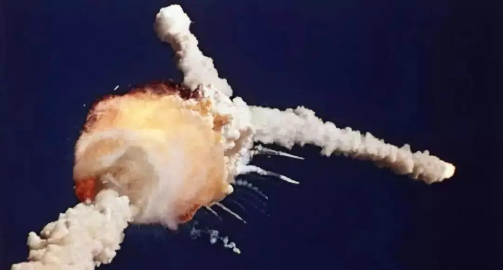
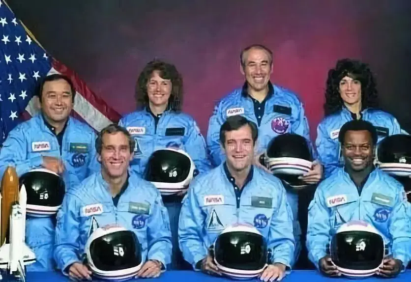
这场灾难来的太快，当时很多人甚至还没有意识到眼前发生了什么。
当人们回过神来，整个空气仿佛凝固一样，巨大的悲凉和压抑弥漫在整个天空。
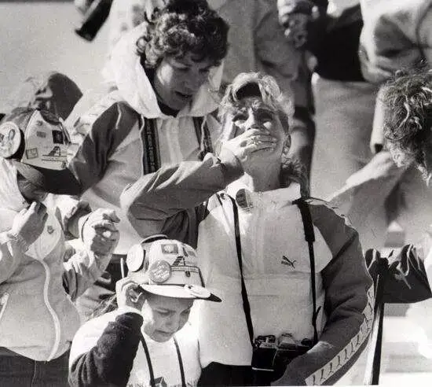
人们捂着嘴，眼泪也禁不住掉下来，但是没有痛哭的声音，因为最大的悲伤从来都是无声的。
这就是做梦的代价！
机上七名宇航员，有人为了自己的航天梦足足准备了几十年。
有人带着家人、同学的期望走进挑战者号。
有人梦想着在失重的状态中吹奏美妙的萨克斯。
有人梦想着亲自在太空中为自己的学生讲解科学。
他们是别人的丈夫，是别人的妻子，是孩子的爸爸，是全人类的梦想家。
可仅仅73秒，所有的梦想和牵挂成为灰烬。
当天，里根总统得知这场灾难后，立马放下手头的工作，发表了那场感动全世界的演讲。
美国器乐摇滚乐队Windsor Airlift采录了当时的演讲，创作了音乐作品《A Lovely Wedding - Snow and Sky》。
这首音乐非常生动地还原了挑战者号的悲壮和背后的美国精神。
我们都知道美国是航天强国，可我们很少注意到美国航天事业所遭遇的失败：超过五次的航天事故，17名宇航员遇难。
成长和改变从来都是需要付出代价的！
我们是否有勇气作出选择？
这次混剪将随着这首音乐前进，我选择两类电影，一种是表现美国精神的作品，一种是表现太空探索的作品。
两类电影彼此交叉，再加上音乐和里根总统的演讲，我们便会明白什么是梦想。
里根总统演讲原文：
女士们先生们：本来，我打算今天晚上向你们宣读国情咨文，但今天早些时候发生的事件让我改变了计划。
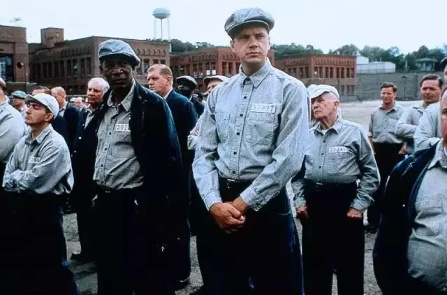
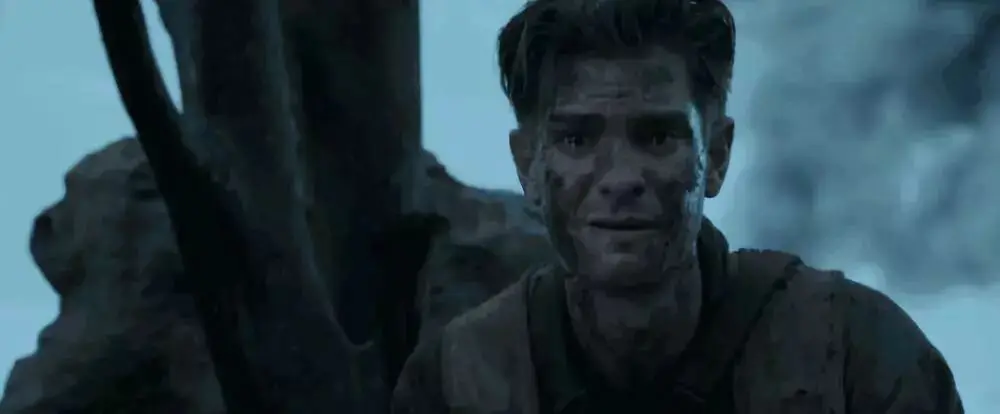
今天是哀悼和怀念的日子。
南希和我为“挑战者号”航天飞机的悲剧感到至为痛心。我们知道全体国人同此心。这真正是全国人的损失。
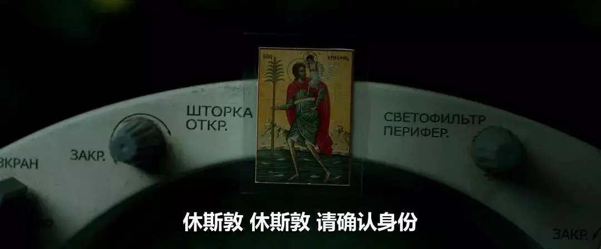
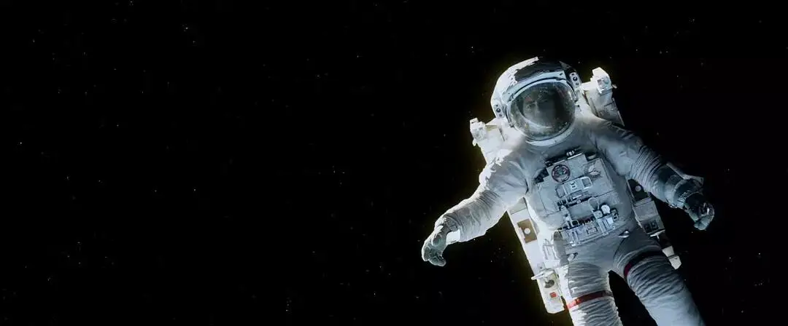
十九年前，几乎就在今天，在一次可怕的地面事故中，我们丧失了三名宇航员。
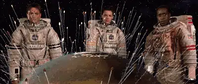
然而我们从未在飞行中丧失过宇航员，从未经历过这样的灾难。
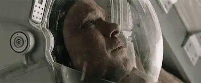
也许我们已经忘记，航天飞机机组人员需要多么大的勇气；但是挑战者七壮士深知其中的危险，他们坚忍不拔，出色地履行了自己的职责。
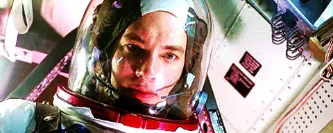
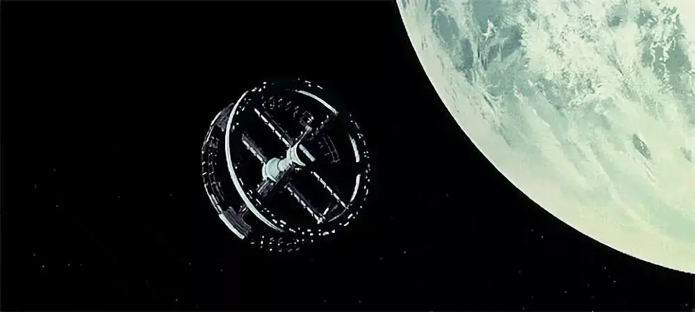
我们悼念七位英雄：迈克尔·史密斯、迪克·斯科比、朱迪恩·伦斯尼克、罗纳德·迈克奈尔、埃利森·奥尼祖卡、格雷戈里·贾维斯、克丽斯塔·麦考利夫。我们举国哀悼失去的英雄。
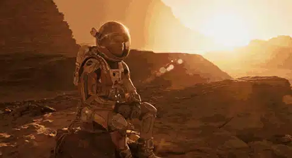
对于这七个人的家人，我们不能百分之百地像你们那样的感受这场灾难的打击。
但是我们感受到了损失，我们认为你们一定也是这样。
你们的亲人勇敢无畏，他们的特殊姿态和特殊精神告诉我们：“把挑战给我，我要满怀喜悦的去迎接。”
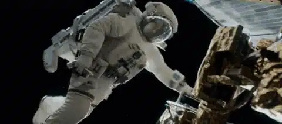
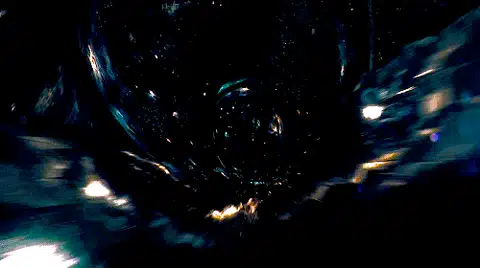
他们渴望探索宇宙，渴望揭开宇宙的奥秘。他们希望尽职，他们做到了。他们为我们所有的人尽了职。 这个世纪，我们对奇迹已习以为常。很难有什么会使我们赞叹不已。
但是美国航天计划二十五年来做的正是如此。我们对太空计划已经习以为常，也许已经忘了我们不过刚刚起步。
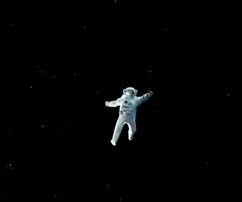
我们仍然是开拓者。他们——挑战者号全体机组人员是开拓者。
我要对观看航天飞机发射直播的美国学童说几句话。
我知道后者难以理解，但有时像这样令人痛苦的事确实会发生。
这些都是探索和发现过程的一部分。这些都是承担风险、拓展人类世界范围的一部分。
未来不属于弱者，未来属于强者。
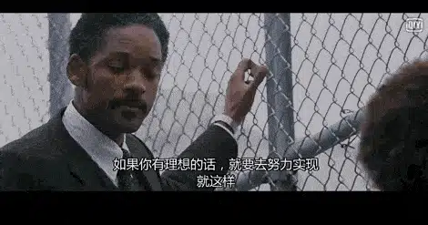
挑战者号全体人员把我们推向未来，我们将继续追随他们。
我一直对我们的航天计划充满信心，并怀抱敬意。
今天发生的悲剧决不会削弱它。
我们没有隐藏自己的航天计划。
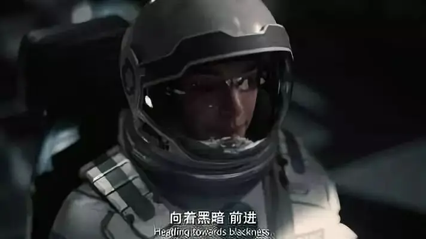
我们没有保密和隐瞒，我们堂堂正正地公开实施它。
这正是自由的方式，我们一分钟也不会改变它。
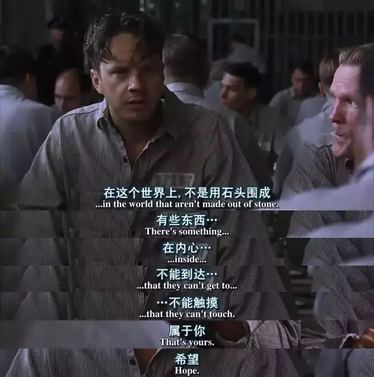
我们将继续探索太空。
我们将有更多次航天飞行，有更多宇航员，更多志愿者，更多平民，更多教师进入太空。一切都不会到此为止。我们的希望和我们的旅程不会停步。
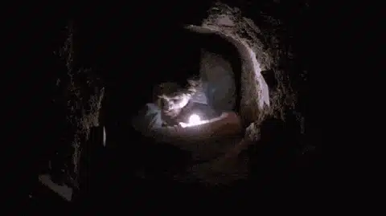
我还想说，但愿我能和为国家航空航天局，或者为完成此次使命而工作的每一个人谈话，告诉他们：“几十年来，你们的奉献和敬业精神令我们感动，让我们铭记在心。我们了解你们的痛苦。我们感同身受。”
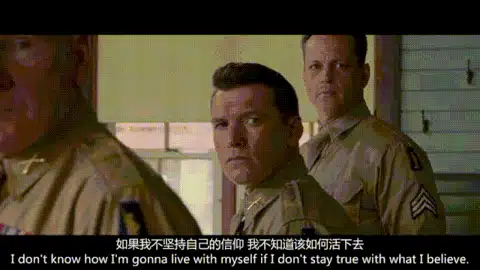
今天是一个巧合。三百九十年前的今天，伟大的探险家佛朗西斯·德雷克勋爵在巴拿马附近海面的一条船上死去。
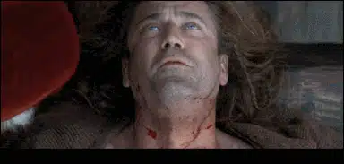
在他生活的时代，最大的疆界就是海洋。后来一位历史学家说：“他生在海边，死在海上，葬在海里。“
今天我们可以这样对挑战者号乘员说：像德雷克一样，他们的奉献是毫无保留的。
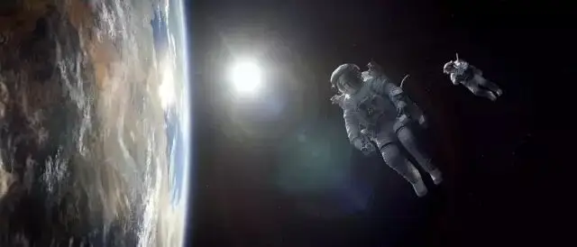
挑战者号航天飞机乘员的生命历程给我们带来荣耀，我们永远不会忘记他们，也不会忘记今天早上最后一次见到他们，那时他们正准备上路，挥手告别，“挣脱大地粗暴的束缚，去触摸上帝的脸”。 Thank you. 谢谢各位。
相关阅读
▼
（点击图片即可获取全文）


这里没有挑逗你眼目情欲的小鲜肉
也没有挑动你肉体情欲的段子
更没有膨胀你今生骄傲的鸡血
我们只在乎那些最质朴真诚的作品
在那里我们才能恢复真正的想象力
我们也坚信这才是我们真正需要的

ID:Six_hundred_hits
长按二维码，一键关注
【六百击】
电影评论
尽情分享朋友圈

微信二维码打赏通道